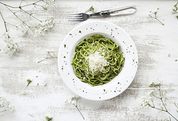
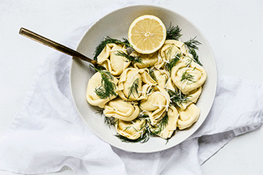

If you're looking for decadence, look no further — you've found the Holy Grail of desserts. Honestly, this cake makes us wonder why Bananas Foster hasn't always been served on top of ice cream cake.
Raspberry & Cream Frozen Yogurt Pie
Giant Ice Cream Sandwich
Dark Chocolate Crunch Ice Cream Sandwich Cake
Bananas Foster Ice Cream Cake
1 (8 ounce) container frozen whipped topping, thawed
20 chocolate round wafers, divided
1 (7 1/4 ounce) bottle Smucker's® Hot Dark Chocolate Microwaveable Topping, divided
DIRECTION
ARRANGE 8 to 9 ice cream sandwiches in 9-inch square pan, cutting to form an even layer. Spread with half of whipped topping. Break or crush chocolate wafers and sprinkle over the whipped cream. Microwave 1 cup of chocolate topping into small microwave-safe bowl on HIGH for 30 seconds. Drizzle evenly over wafers.
TOP with remaining 8 to 9 ice cream sandwiches to form an even layer. Spread with remaining whipped topping. Freeze 3 hours or overnight.